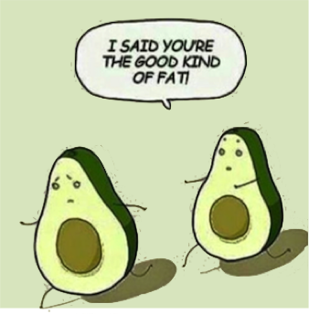

Strive to consume all three types of fat: saturated, monounsaturated, and polyunsaturated. Keep ratios to about 1/3 each.
Most people consume far too much Omega 6's in their diet. Research has shown that consuming these types of fats in excess harms heart health, increases cancer risk, and inflammatory and autoimmune diseases when not consumed in balance with other fats and oils.
A short list of culprits to watch out for are:*Avoid cooking with canola oil. It becomes unstable when exposed to heat and creates trans fatty acids (trans fats) and free radicals.
